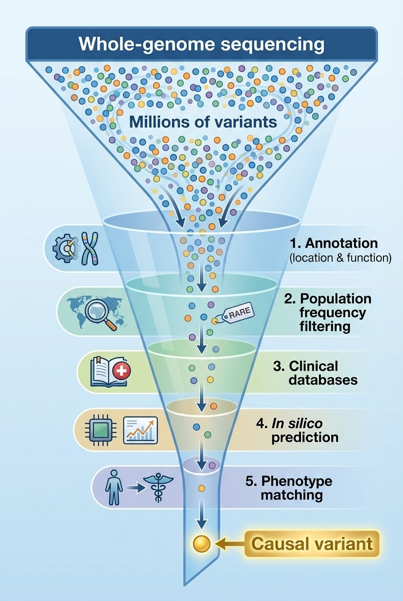
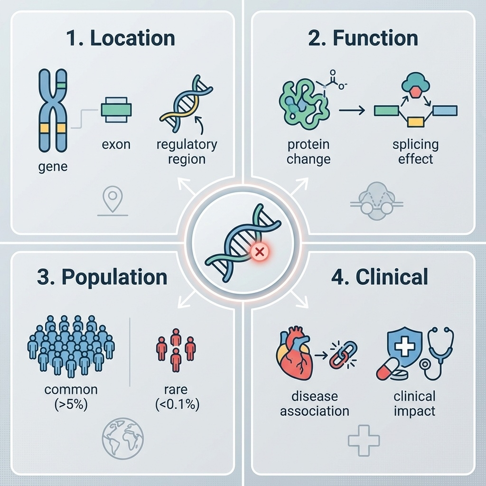
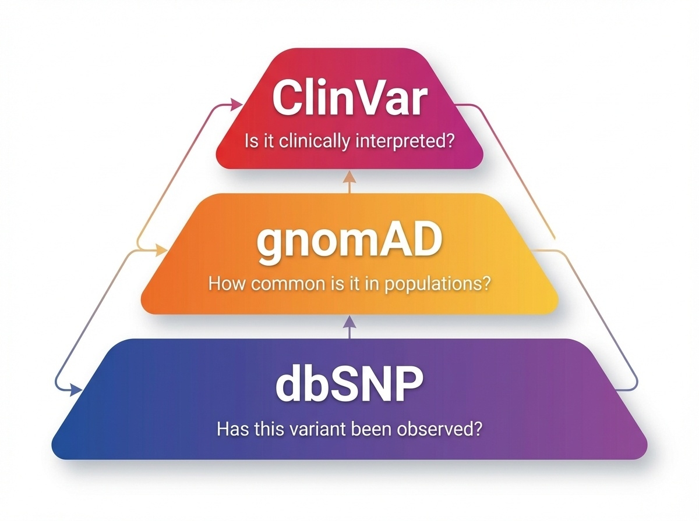
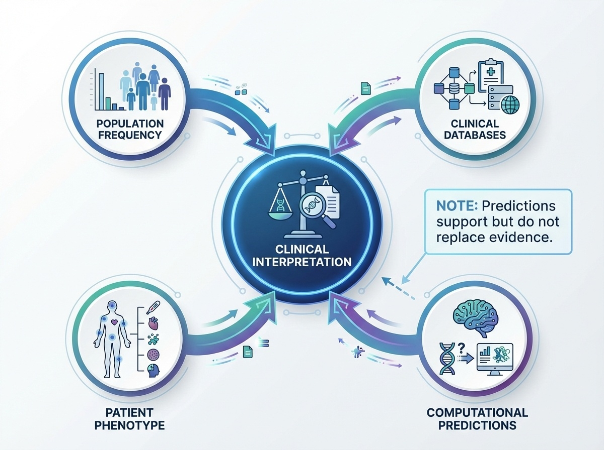

BSMS205 · Genetics
Annotation &
Chapter 7 · Part I · The Human Genome
Welcome to Chapter seven, the final chapter of Part One. Last week we finished the sequencing chapter — whole-genome and whole-exome sequencing. We can now read genomes by the millions. But here is the uncomfortable truth: when you sequence a person, you get four to five million variants. Most of them are noise. Today we ask the central question — which ones matter? That question is the entire field of variant annotation. Let's begin.
A question to start with
You sequenced a patient.5 million variants.what ?
Hold this scenario in your head for the lecture. You ran whole-genome sequencing on a four-year-old child with seizures and developmental delay. The pipeline ran overnight. In the morning, your VCF file has roughly five million variant lines. One of those lines, somewhere in there, is the cause of her disease. The other four million nine hundred ninety-nine thousand are background noise — variants she shares with the rest of humanity. How do you find the one that matters? That is what today is about.
The data deluge · per genome
Variant type Count per person
SNVs · single nucleotide variants~4 – 5 million Small indels · insertions / deletions~400,000 – 500,000 Structural variants · large rearrangementsthousands Causal variant for a rare diseasetypically 1
A needle-in-a-haystack problem at scale.
Here is the scale problem in numbers. Every healthy human carries about four to five million single nucleotide variants — places where their genome differs from the reference by a single letter. They also carry roughly four to five hundred thousand small insertions and deletions, and thousands of larger structural variants. These numbers are normal. They are the genetic signature of being human. For a rare disease patient, the typical answer is one variant — a single de novo or inherited change — buried in those millions. Annotation is how we find it.
The core operation
Annotation meaning to each variant.
Raw VCF: chr17:43,124,027 · T → G
Annotated: BRCA1 · missense · p.Cys61Gly · pathogenic
Annotation is the operation that turns a coordinate into a story. Take a raw variant from the VCF — chromosome seventeen, position forty-three million, T to G. By itself, that line is meaningless. Annotation adds the gene name — BRCA one. The consequence — a missense change. The protein change — cysteine sixty-one to glycine. The clinical interpretation — pathogenic, a known breast cancer founder mutation. Same data point. Worlds apart in usefulness.
Four questions for every variant
LOCATION — gene? exon? regulatory region?FUNCTION — protein change? splicing effect?POPULATION — common or rare?CLINICAL — known disease association?
Every annotation pipeline is some answerthese four questions .
Every variant annotation tool — and there are dozens — is at heart trying to answer four questions. Where is it? In a gene, an exon, a promoter, an intron, or some completely uncharacterized region? What does it do? Does it change a protein, break a splice site, or sit silently? How common is it? Seen in one in ten people, or never seen before? And finally, has anyone seen it cause disease before? You will see this four-question frame again and again today, because it organizes the whole field.
Roadmap for today
Annotation: the four core questions
The three-tier database system
HGVS nomenclature & a worked variant
Computational pathogenicity predictors
ACMG/AMP classification framework
Biobanks & population diversity
A clinical case · the filtering funnel
Here is the path. First, the four-question framework and the tools that automate annotation. Second, the three-tier database hierarchy: dbSNP, gnomAD, and ClinVar. Third, the HGVS nomenclature standard and a fully worked variant interpretation example. Fourth, when ClinVar fails us — computational predictors like CADD, REVEL, and AlphaMissense. Fifth, how clinicians actually classify variants using the ACMG criteria. Sixth, why population diversity in biobanks is essential. And seventh, a real clinical case showing the filtering funnel from millions to one. Let's go.
§ 1
The Four
We start with the foundational frame. Every variant in a VCF must answer these four questions before any clinical or research conclusion is possible. Skip any one of them and you can be badly wrong.
The four-question frame

Figure 1. Every variant must be evaluated across four dimensions: genomic location, functional consequence, population frequency, and clinical relevance.
Here are the four questions in one figure. Notice they form a logical pipeline. Location tells you what the variant could possibly affect. Function tells you what it actually does at the molecular level. Population frequency tells you how plausible it is as a rare-disease cause. And clinical interpretation pulls in everything we already know from prior cases. Each question constrains the next. A variant in a non-coding intergenic region — question one already softens the impact assumption.
Question 1 · Location
Coding exon — most likely to disrupt proteinIntron — usually neutral, except splice sites5' / 3' UTR — translation, stabilityPromoter / enhancer — regulatoryIntergenic — often unannotated function
Location first. A variant in a coding exon directly changes a protein and demands attention. A variant in the middle of an intron is usually irrelevant — except at the splice donor or acceptor sites, where it can break splicing entirely. UTRs, the regions flanking the coding sequence, can affect translation efficiency or RNA stability. Promoters and enhancers control whether a gene is expressed at all. And intergenic variants — between genes, with no known function — are the largest category and the hardest to interpret. Where the variant sits constrains every downstream question.
Question 2 · Function
Class Effect Severity
Stop-gain Premature stop · truncated protein HIGH Frameshift Reading frame disrupted HIGH Splice site Exon skipping · intron retention HIGH Missense One amino acid changed MODERATE Synonymous Silent · same amino acid LOW
Function adds a severity tier. Stop-gain variants insert a premature stop codon and produce a truncated, usually non-functional protein — high impact. Frameshifts shift the reading frame and produce gibberish downstream — also high. Splice site variants destroy the donor or acceptor sequence and cause exon skipping or intron retention — high. Missense variants swap one amino acid for another — moderate, because the effect depends on the substitution. And synonymous variants change a nucleotide but not the amino acid — usually low impact, though not always silent. This severity ladder is what tools like SnpEff use to triage.
Question 3 · Population frequency
Common variant (>1%) → not a severe rare disease cause
Rare variant (<0.1%) → candidate for rare disease
Singleton or absent → flag for follow-up
A variant common in the population
The third question is brutal in its simplicity. If a variant is common in the population — say, present in more than one percent of people — it cannot be the cause of a severe childhood disease. The logic is straightforward. If it caused severe disease, natural selection would have removed it. So when you see a candidate variant for a rare disorder, the first sanity check is the allele frequency. Common means benign for rare disease. Rare or absent means candidate. This single principle eliminates ninety-five percent of variants instantly.
Question 4 · Clinical
Has this exact variant been seen before ?
If yes — was it linked to a disease?
If linked — by how many labs, on what evidence?
Question four is where ClinVar lives.
Finally, the clinical question. Has anyone, anywhere, ever seen this exact variant before? If they have, was it associated with a disease in their patient? And if it was, how many independent labs have reported the same association, and what evidence backed each report? This is the question that ClinVar exists to answer, and we will spend a whole section on it. The other three questions tell you what a variant could do. Question four tells you what it has done.
Tools that answer these questions
Tool Strength Output example
VEP (Ensembl)Comprehensive location · regulatory regions "CFTR exon 11, stop-gain, p.Gly542*" ANNOVAR Multi-database integration · filtering Adds gnomAD frequencies, conservation, disease links SnpEff Automatic impact tier HIGH / MODERATE / LOW / MODIFIER
In practice, researchers run multiple tools for cross-validation.
Three tools dominate the annotation landscape. VEP, the Variant Effect Predictor from Ensembl, is the most comprehensive — it handles coding regions, splice sites, regulatory elements, and miRNA target sites. ANNOVAR is the integration champion — it pulls in dozens of databases and lets you filter on any combination of annotations. And SnpEff is the fast triager — it gives every variant a one-word impact tier — high, moderate, low, or modifier — that you can use for instant prioritization. In practice, large studies run all three and require agreement before flagging a variant.
§ 2
The Three-Tier
Now we move from the four questions to where the answers actually live. The variant database ecosystem has hundreds of resources, but three sit at the center of every clinical pipeline. They form a hierarchy: catalog, frequency, clinical. Learn these three and you understand ninety percent of variant interpretation.
The hierarchy

Figure 2. dbSNP catalogs known variants, gnomAD provides population frequencies, ClinVar offers clinical interpretations. Each tier answers a different question.
Here is the three-tier system in one figure. dbSNP at the bottom — the broadest catalog, asking simply "has this variant been seen before?" gnomAD in the middle — quantifying how often it is seen, and in which populations. ClinVar at the top — connecting variants to diseases when the evidence supports it. Each tier filters the layer below it. dbSNP has over a billion entries. gnomAD has tens of millions. ClinVar has a few million. The funnel narrows toward clinical relevance.
Tier 1 · dbSNP — the catalog
NCBI · maintained since 1998
Over 1.1 billion variant sites
Each variant gets a unique rs number — e.g. rs429358
Question answered: "Has this variant been documented?"
A common variant with an old rs ID is almost always benign.
Tier one. dbSNP, the Single Nucleotide Polymorphism Database, run by NCBI since nineteen ninety-eight. It is the comprehensive variant catalog — over one point one billion entries. Every variant submitted gets a unique identifier called an rs number — short for reference SNP. You will see these in the literature constantly — rs four two nine three five eight is the famous APOE epsilon four allele. The question dbSNP answers is the most basic possible: has this variant been seen before by anyone? If your variant has an old rs ID and is common, it is almost certainly not what you are looking for.
Tier 2 · gnomAD — the frequency reference
Aggregates sequencing data from 140,000+ individuals
Allele frequencies by population · African, East Asian, European, etc.
Question answered: "How common is this variant?"
Provides constraint scores — pLI, LOEUF, missense Z
Tier two. gnomAD, the Genome Aggregation Database. Over one hundred forty thousand human exomes and genomes from broad and inclusive populations, all aligned, jointly called, and quality controlled. It does what dbSNP cannot — it tells you how often each variant appears, broken down by population. African, East Asian, South Asian, European, Latino, and Ashkenazi Jewish are the standard groupings. It also computes constraint scores that tell you how tolerant a gene is to loss of function — pLI and LOEUF — which we will see in chapter eight. gnomAD is arguably the most-used resource in clinical genomics today.
gnomAD logic in practice
Allele frequency 1%
Probably not the cause
Too common for severe disease
De-prioritize
Absent from 140,000+
Suspicious — investigateEither ultra-rare or novel
High candidate priority
Here is the gnomAD logic that you will use every week as a clinical geneticist. A variant with an allele frequency of one percent in the matched population — that is one in fifty people carries it. Far too common to cause a severe childhood disorder. De-prioritize. A variant that is absent from all one hundred forty thousand individuals — that is the suspicious case. Either it is ultra-rare in the population, or it is novel and arose in your patient. High priority for follow-up. The contrast between these two cases is the heart of variant prioritization.
Why population diversity matters
A variant common in East Asianspathogenic .
Reference data must match patient ancestry
Old gnomAD versions were European-skewed
Korean Variant Archive (KOVA ): 22.8% better filtering for Korean patients
Why does it matter that gnomAD spans many populations? Consider a real failure mode. A variant is common — say five percent — among East Asians, but completely absent from European cohorts. If your reference database only contains Europeans, the variant looks ultra-rare and gets flagged as a candidate disease cause. In a Korean patient, that is a clinical error in the making. The Korean Variant Archive, KOVA, was built precisely to fix this — adding five thousand Korean genomes as a local reference. Studies show it improves variant filtering by twenty-two point eight percent for Korean patients compared to using European data alone. Diversity is not a slogan. It is methodology.
Tier 3 · ClinVar — clinical interpretation
NCBI clinical variant database
Links variants → diseases with evidence-based classifications
Submitted by labs, hospitals, expert panels worldwide
Question answered: "Is this variant disease-causing?"
Tier three. ClinVar, also from NCBI, is the database that connects variants to clinical interpretations. Unlike dbSNP and gnomAD, which are agnostic about disease, ClinVar contains explicit assertions: this variant causes that disease, and here is the evidence. Submissions come from clinical labs, academic medical centers, and expert panels. The most authoritative entries have multiple submitters in concordance. The least authoritative are single submissions with thin evidence. The interpretation rests on the entire chain.
The five-tier classification
Class Meaning
Pathogenic Causes disease · strong evidence Likely pathogenic Probably causes disease · > 90% VUS Variant of Uncertain Significance Likely benign Probably harmless · > 90% Benign Harmless · strong evidence
ClinVar uses a five-tier classification. At the top — pathogenic — strong evidence the variant causes disease. Below that — likely pathogenic — more than ninety percent confidence but not yet definitive. In the middle — VUS, the variant of uncertain significance — the most clinically frustrating category, because there is some evidence but not enough either way. Then likely benign, more than ninety percent confidence the variant is harmless. And finally benign, with strong evidence of harmlessness. The two ends are clinically actionable. The middle three require judgment, and especially the VUS bucket consumes most of clinical genomics' time.
The VUS challenge
Many variants lack sufficient evidence
Cannot return as pathogenic or benign
Patients often recheck annually as data accrues
VUS reclassification is the slow grind of clinical genomics
Today's VUS is tomorrow's diagnosis
The VUS problem deserves its own slide. Roughly one third of variants reported in clinical testing return as VUS — uncertain. The lab cannot in good conscience call them pathogenic, but cannot rule them out either. Patients are told to come back periodically — every year or two — because as more cases accumulate in ClinVar, today's VUS may resolve into a confident pathogenic or benign call. This reclassification work is the slow grind of clinical genomics. It is also why open data sharing is so vital — every reported case helps the next family.
Three databases · three questions
Tier Database Asks Scale
1 dbSNP Has it been seen? 1.1 billion 2 gnomAD How common is it? 140,000+ samples 3 ClinVar Does it cause disease? 3 million entries
Putting it all together — the three-tier database system in one table. dbSNP at one point one billion variant sites answers "has anyone documented this?" gnomAD at one hundred forty thousand individuals answers "how common is it, and in which populations?" ClinVar at roughly three million curated entries answers "does it actually cause disease?" Together these three resources are the spine of every clinical variant interpretation pipeline in the world today.
§ 3
HGVS &
We have talked about variants in abstract. Now let's get concrete. Variants need a standard name — that is the HGVS nomenclature. Then we will walk a single real-world variant through the entire interpretation pipeline.
HGVS · the variant naming standard
Human Genome Variation Society nomenclatureOne unambiguous name for any variant
Three coordinate systems: g. genomic · c. coding · p. protein
NM_007294.3 : c.181T>G → p.Cys61Gly
HGVS — the Human Genome Variation Society — defined the universal naming standard for variants. The goal is simple: any single variant should have one unambiguous name that any clinician anywhere can decode. Three coordinate systems are used. Lowercase g for genomic position on a chromosome. Lowercase c for position on a coding sequence — counted from the start codon. Lowercase p for position on a protein. The example here — NM underscore zero zero seven two nine four point three colon c dot one eight one T greater than G — translates to "in BRCA one transcript NM zero zero seven two nine four version three, position one eighty-one of the coding sequence, T changes to G." That recodes to protein cysteine sixty-one to glycine.
Worked example · BRCA1 c.181T>G
Step 1 · Location
Gene: BRCA1
Exon 5
RING domain
Step 2 · Function
Missense Cys61 → Gly
Loses zinc-binding cysteine
Now the full walkthrough. BRCA one c dot one eighty-one T to G. Step one — location. The variant lies in BRCA one, exon five, in the RING domain at the protein's amino terminus. The RING domain is essential for the protein's function as a tumor suppressor — it is what gives BRCA one its enzymatic activity. Step two — function. The variant is a missense — single amino acid change from cysteine to glycine. Why does that matter? Because the RING domain coordinates a zinc ion using cysteine residues, and cysteine sixty-one is one of those zinc-binding cysteines. Lose it and the structure collapses.
Worked example · continued
Step 3 · Population
gnomAD: absent
0 / 140,000+ alleles
Step 4 · Clinical
ClinVar: Pathogenic
30+ submissions
Founder mutation in some populations
Verdict: Clinically actionable pathogenic variant — informs cancer screening & family testing.
Step three — population. We check gnomAD. The variant is absent from all one hundred forty thousand plus individuals. That is consistent with a high-penetrance disease allele. Step four — clinical. We check ClinVar. The variant has thirty-plus submissions, all converging on pathogenic, with multiple expert panel reviews. It is even known as a founder mutation in certain populations. Verdict — this is a clinically actionable pathogenic variant in a hereditary breast and ovarian cancer gene. The patient gets enhanced screening, possible prophylactic options, and the family gets cascade testing offered. That is the four-question framework end to end.
§ 4
When ClinVar
The previous example was clean — the variant was a known pathogenic. But what about the variants ClinVar has never seen? That is where computational predictors come in. They are not perfect, but for novel variants, they are often all we have.
The novel variant problem
Most variants found in patients are not in ClinVar
Especially missense — many possible amino acid swaps
Need to predict functional effect in silico
For an absent or single-submission variant,
The novel variant problem. Most missense variants you find in any given patient are not yet in ClinVar — there are simply too many possible amino acid substitutions. Out of the roughly seven million possible missense variants in the human exome, only a few hundred thousand have been reported with disease links. For everything else, we turn to computational predictors that try to estimate from sequence and structure how damaging an amino acid change is likely to be.
Three modern predictors
Tool Score Threshold Best for
CADD Phred-scaled >20 = top 1% General variant impact REVEL 0 – 1 >0.5 likely pathogenic Missense in Mendelian disease AlphaMissense Benign / Ambiguous / Pathogenic 3-class output Structure-based · 71M variants
Three predictors dominate today. CADD — Combined Annotation Dependent Depletion — uses a Phred-like score where higher is more deleterious. Above twenty puts you in the top one percent most damaging variants; above thirty puts you in the top zero point one percent. REVEL — Rare Exome Variant Ensemble Learner — scores missense variants on a zero to one scale, with above zero point five suggesting likely pathogenic. AlphaMissense, released by DeepMind in twenty twenty-three, uses AlphaFold-derived structural information and produces a three-class label across seventy-one million possible missense variants — benign, ambiguous, or pathogenic.
An important limitation
These are predictions , not proof.
Even AlphaMissense gets some known pathogenic variants wrong
Use as one piece of evidence — never alone
ACMG framework explicitly down-weights computational evidence
Critical caveat. These tools produce predictions, not proof. AlphaMissense is the best predictor we have ever had, but it still misclassifies known pathogenic variants several percent of the time. CADD and REVEL have similar error rates. So the rule is — use them as one line of evidence, never as the sole basis for a clinical call. The ACMG guidelines, which we will see next, explicitly limit how much weight in silico predictions can carry. The predictors get a vote, not a veto.
Integrating evidence

Figure 3. Clinical interpretation requires convergence of population data, databases, computational predictions, and patient phenotype.
The figure makes the point visually. Clinical interpretation is not one piece of evidence — it is convergence. Population data tells you frequency. Databases tell you if anyone has seen it. Computational predictors estimate damage. Patient phenotype tells you whether the gene fits the disease. Only when these converge does a clinical call become defensible. A single line of evidence is never enough. That convergence requirement is formalized by the next framework we will see — the ACMG criteria.
§ 5
The ACMG/AMP
The American College of Medical Genetics and the Association for Molecular Pathology in twenty fifteen jointly published a framework for variant interpretation that has become the global standard. It is the formal rule-set behind every ClinVar pathogenic call. We will not memorize the codes — but we will see how the system works, because it is what every clinical lab uses.
The ACMG idea
Define standardized evidence codes · ~28 of them
Weight each code: very strong · strong · moderate · supporting
Combine codes → final 5-tier classification
Two axes: pathogenic evidence vs benign evidence
The ACMG framework defines roughly twenty-eight standardized evidence codes, each tagged with a weight — very strong, strong, moderate, or supporting. Codes are split between evidence that argues for pathogenicity and evidence that argues for benignity. To classify a variant, the lab assigns whichever codes apply, then runs a combinatorial rule set that maps the collection of codes to one of the five final tiers — pathogenic, likely pathogenic, VUS, likely benign, benign. It is essentially a structured scoring system for evidence.
Key pathogenic evidence codes
Code Weight Meaning
PVS1 Very strong Null variant in a LoF-disease gene PS1 Strong Same amino-acid change as known pathogenic PS2 Strong De novo · confirmed parents PM1 Moderate Critical functional domain · hotspot PM2 Moderate Absent / ultra-rare in population data PP3 Supporting Multiple computational lines agree
Here are six of the most-used pathogenic codes. PVS one — very strong — applies when the variant is a clear loss-of-function — a stop-gain, frameshift, or canonical splice site — in a gene where loss of function is a known disease mechanism. PS one — same amino acid change as a previously reported pathogenic variant. PS two — de novo, with confirmed parental relationships. PM one — sits in a critical functional domain or known mutational hotspot. PM two — absent or ultra-rare in gnomAD. And PP three — multiple computational predictors agree on damage. Notice how each code maps to one of our four core questions.
Key benign evidence codes
Code Weight Meaning
BA1 Stand-alone Allele frequency ≥ 5% in any population BS1 Strong Higher frequency than expected for the disease BS3 Strong Functional studies show no damaging effect BP4 Supporting Computational lines agree: benign
And the matching benign codes. BA one is the clinical kill switch — if a variant is at five percent or higher allele frequency in any general population, it is automatically benign for severe disease. No further analysis needed. BS one — higher frequency than the disease itself would allow. BS three — functional studies in the lab show no damaging effect. And BP four — computational predictors agree the variant is benign. Like the pathogenic codes, these map back to the four core questions.
Combining codes · example
BRCA1 c.181T>G accumulates:
PS1 · same amino acid change as known pathogenicPM1 · RING domain · critical for functionPM2 · absent in gnomADPP3 · CADD, REVEL, AlphaMissense all agree
1 strong + 2 moderate + 1 supporting → Pathogenic
Going back to our BRCA one c dot one eighty-one T to G example. Walk the codes. PS one — yes, the same cysteine sixty-one to glycine change has been reported pathogenic before. PM one — yes, the RING domain is a critical functional domain. PM two — yes, absent from gnomAD. PP three — yes, all three computational predictors flag it as damaging. One strong plus two moderate plus one supporting — by ACMG combinatorial rules, this is Pathogenic. The structured framework gives you a defensible audit trail for the call.
§ 6
Biobanks &
Two more topics before we put it all together. First, the genome annotation that underlies everything — the gene models we map variants to. Second, biobanks — the vast collections of genotype-plus-phenotype data that connect variants to traits at population scale.
GENCODE vs RefSeq
Feature GENCODE RefSeq
Coverage ~45,000 genes (coding + non-coding) ~20,000 protein-coding Curation Manual + automated Primarily manual IDs ENSG / ENSTNM_ / NP_Best for Research · non-coding RNA Clinical diagnostics
Clinical reports use RefSeq: NM_007294.3:c.5266dup
Before annotating variants, you need a map of the genome — where the genes sit, where the exons start and end, where the regulatory regions are. Two competing annotation sets dominate. GENCODE — comprehensive, includes both coding and non-coding genes, around forty-five thousand entries, identified by ENSG and ENST prefixes. Used heavily in research, especially for non-coding RNA studies. RefSeq — conservative, focused on protein-coding genes, around twenty thousand entries, identified by NM and NP prefixes. RefSeq is the clinical standard. Every diagnostic report you will ever read uses RefSeq coordinates — for example, BRCA one founder mutation reported as NM zero zero seven two nine four point three colon c dot five two six six dup.
Biobanks · genotype + phenotype at scale
Large collections of DNA + health records
Question: "Do carriers of variant X have higher disease rates?"
Power: link variation to outcomes at population scale
The substrate of GWAS , drug discovery, drug response
Biobanks are the next layer up. They are collections of DNA samples linked to detailed phenotype data — health records, lab values, imaging, sometimes lifestyle questionnaires. The fundamental question they answer is: do people who carry variant X have higher rates of disease Y than people who do not? They power genome-wide association studies, drug target discovery, pharmacogenomics, and disease risk prediction. The scale is what makes them powerful — hundreds of thousands of individuals deeply phenotyped.
Major biobanks
Biobank Scale Population Strength
UK Biobank 500,000 UK adults NHS records + imaging All of Us 245,000+ US · diversity focus Health disparities KOVA 5,305 Korean East Asian reference FinnGen 500,000+ Finnish Founder-effect rare variants ToMMo 150,000 Japanese · 3 generations Gene × environment longitudinal
Five biobanks worth knowing by name. UK Biobank — five hundred thousand UK adults, the most-studied resource in genomics, with NHS health records and extensive imaging. All of Us — the US program, two hundred forty-five thousand and counting, with an explicit mandate to address health disparities through diverse recruitment. KOVA — the Korean Variant Archive, five thousand three hundred Korean genomes, our local reference. FinnGen — half a million Finns, leveraging the population's founder-effect history to find rare-variant associations. ToMMo — the Tohoku Medical Megabank, one hundred fifty thousand Japanese individuals tracked across three generations to study gene-environment interactions. Each fills a different gap.
Why diversity is methodology
Population-specific datamisclassification .
Old GWAS literature: ~80% European participants
Polygenic risk scores trained in Europeans fail in Africans
Korean rare-disease screening needs Korean reference data
I keep returning to this point because it is consequential. Population diversity in our reference resources is not optional — it is methodology. The historical genomics literature was about eighty percent European in participants. Polygenic risk scores trained on European data fail to predict accurately for African individuals. Korean rare-disease screening cannot use European reference frequencies without introducing systematic error. The equity argument and the technical argument converge — diverse data produces better science for everyone. KOVA, BBJ, ToMMo, and All of Us exist for this reason.
§ 7
A Clinical Case
Now we put everything together with a real case — a four-year-old patient walked through the entire variant filtering funnel from twenty-five thousand variants down to one diagnosis. This is what the field actually looks like in practice.
The patient
4-year-old · developmental delay
Recurrent seizures from infancy
Abnormal brain MRI
Three years of diagnostic odyssey · no answer
Whole-exome sequencing ordered
A four-year-old girl. Developmental delay since infancy, recurrent seizures starting at six months of age, an abnormal brain M R I but no specific syndrome diagnosed. Her family had been through three years of what clinical geneticists call the diagnostic odyssey — multiple specialists, multiple tests, no answer. The clinical team finally ordered whole-exome sequencing as a last-resort diagnostic step. The pipeline returned about twenty-five thousand variants. Now what?
The filtering funnel

Figure 4. Sequential filtering through annotation, population frequency, clinical databases, computational prediction, and phenotype matching narrows millions of variants to one causal candidate.
This figure shows the funnel that defines clinical genomics. Start broad — twenty-five thousand variants. Apply annotation — keep only those affecting protein function. Apply population frequency — keep only the rare ones. Apply clinical databases — keep only those in genes linked to the patient's symptoms. Apply computational predictors — keep only the ones flagged as damaging. Apply phenotype matching — keep only the gene whose disease profile fits. The funnel narrows by orders of magnitude at each step. By the bottom, you usually have one to three candidates left. This is the playbook.
The funnel in numbers
Step Filter Variants left
0 WES total 25,000 1 Annotation: protein-affecting ~200 2 gnomAD < 0.5% ~40 3 Genes matching phenotype 3 4 CADD/REVEL/AlphaMissense agreement 1
Here is the funnel in literal numbers from this case. Twenty-five thousand variants from the exome. After annotation — keeping only variants that affect protein sequence — about two hundred. After applying gnomAD frequency below zero point five percent — about forty rare variants remain. After narrowing to genes whose known disease phenotypes overlap with seizures plus developmental delay — three candidate variants. After cross-checking computational predictors and confirming all three flag the variant as damaging — one final candidate. From twenty-five thousand to one in five filtering steps.
The diagnosis
Variant: SCN1A · NM_001165963.4:c.4970G>A · p.Arg1657His
CADD: 32 (top 0.1%)
REVEL: 0.89 · likely pathogenic
gnomAD: absent in 140,000+
De novo · confirmed parents
Diagnosis: Dravet syndrome
And here is the answer. A missense variant in S C N one A — a sodium channel gene. CADD score thirty-two — top zero point one percent of damaging variants genome-wide. REVEL zero point eight nine — well above the likely-pathogenic threshold. Absent from all one hundred forty thousand gnomAD individuals. And critically — confirmed de novo, meaning it appeared new in the patient and is not in either parent. The diagnosis — Dravet syndrome, a severe genetic epilepsy specifically caused by S C N one A loss of function. Diagnostic odyssey ended.
What the diagnosis enables
Treatment optimized — specific anti-seizure medications
Avoid contraindicated drugs (sodium channel blockers worsen Dravet)
Low recurrence risk for future children (de novo)
Family connected to Dravet support resources
Potential gene therapy / antisense trial enrollment
Why does the diagnosis matter clinically? First, treatment becomes specific. Dravet has known effective medications and known contraindicated ones — sodium channel blockers, the first thing most epilepsy patients receive, actually worsen Dravet seizures. Knowing the gene avoids that error. Second, recurrence risk for future children is low because the variant was de novo, not inherited — that information matters for family planning. Third, the family connects to a community of other families dealing with the same disorder. And fourth, Dravet now has emerging therapies, including antisense oligonucleotides and gene therapy trials. Diagnosis is not the end — it is the beginning of targeted care.
§ 8
Summary
Let's pull it all together.
What to take away
Annotation answers 4 questions : location · function · frequency · clinical
Three-tier database: dbSNP → gnomAD → ClinVar
HGVS gives every variant one canonical name
Predictors (CADD, REVEL, AlphaMissense) — vote, never veto
ACMG framework: structured evidence → 5-tier classificationPopulation diversity is methodology, not optics
Six things to take away. One — every variant must answer four questions: location, function, population frequency, and clinical relevance. Two — three databases form the spine of variant interpretation: dbSNP for catalog, gnomAD for frequency, ClinVar for clinical interpretation. Three — HGVS provides one universal name per variant, with genomic, coding, and protein coordinates. Four — computational predictors like CADD, REVEL, and AlphaMissense add evidence but never replace it. Five — the ACMG framework formalizes how evidence is combined into one of five classification tiers. And six — population diversity in reference data is not a slogan, it is methodology — Korean patients need Korean reference data.
End of Part I · The Human Genome
Ch 1 · Human Genome Project — the reference
Ch 2 · T2T — closing the gaps
Ch 3 · Genome organization
Ch 4 · Pangenome
Ch 5 · Sequencing technology
Ch 6 · NGS applications
Ch 7 · Annotation & databases — making sense of it
With chapter seven, we close Part One — the Human Genome. We started with the reference itself, the Human Genome Project. We added the missing eight percent with T2T. We learned how the genome is organized and how it varies — the pangenome. We learned how to read genomes — short read and long read sequencing. We learned how to apply that reading at scale — whole-exome and whole-genome studies. And today we learned how to make sense of the millions of variants those reads produce. The reference plus the methods plus the interpretation framework — that is the toolkit.
Next · Part II
We have the tools .variants themselves .
Part II · Genetic Variation — types · mechanisms · consequences
And one question to leave you with. We now have the tools to find variants and the framework to interpret them. But what are variants, mechanistically? Why do some single-letter changes cause devastating disease while others do nothing? Why do some genes tolerate loss of function and others not? Why is one mutation a founder effect in Koreans and another a founder effect in Ashkenazi Jews? That is Part Two — genetic variation itself. Types, mechanisms, consequences. See you next time.